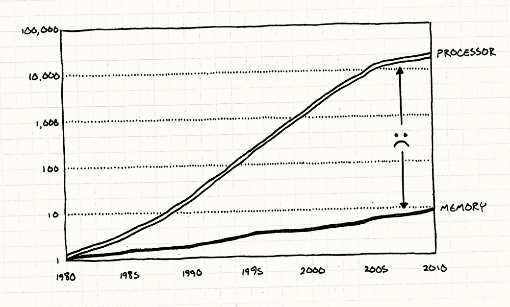
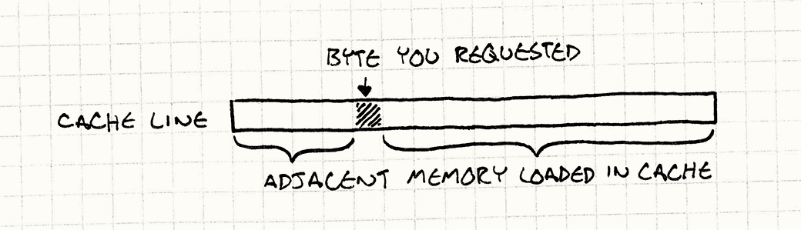
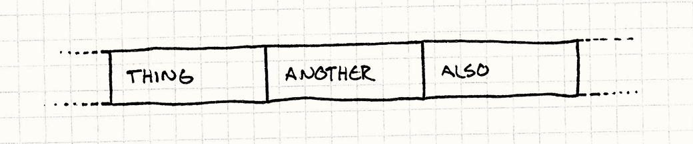
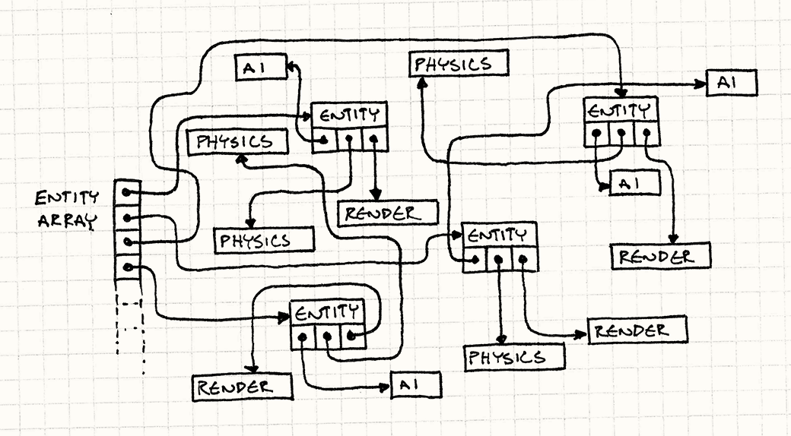
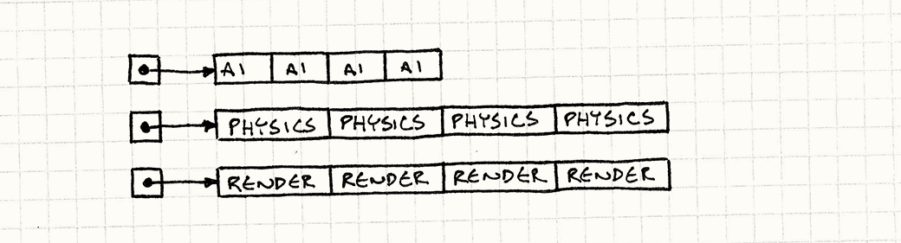

Data Locality
Game Programming PatternsOptimization Patterns
Intent
Accelerate memory access by arranging data to take advantage of CPU caching.
Motivation
We’ve been lied to. They keep showing us charts where CPU speed goes up and up every year as if Moore’s Law isn’t just a historical observation but some kind of divine right. Without lifting a finger, we software folks watch our programs magically accelerate just by virtue of new hardware.
Chips have been getting faster (though even that’s plateauing now), but the hardware heads failed to mention something. Sure, we can process data faster than ever, but we can’t get that data faster.

For your super-fast CPU to blow through a ream of calculations, it actually has to get the data out of main memory and into registers. As you can see, RAM hasn’t been keeping up with increasing CPU speeds. Not even close.
With today’s hardware, it can take hundreds of cycles to fetch a byte of data from RAM. If most instructions need data, and it takes hundreds of cycles to get it, how is it that our CPUs aren’t sitting idle 99% of the time waiting for data?
Actually, they are stuck waiting on memory an astonishingly large fraction of time these days, but it’s not as bad as it could be. To explain how, let’s take a trip to the Land of Overly Long Analogies…
A data warehouse
Imagine you’re an accountant in a tiny little office. Your job is to request a box of papers and then do some accountant-y stuff with them — add up a bunch of numbers or something. You must do this for specific labeled boxes according to some arcane logic that only makes sense to other accountants.
Thanks to a mixture of hard work, natural aptitude, and stimulants, you can finish an entire box in, say, a minute. There’s a little problem, though. All of those boxes are stored in a warehouse in a separate building. To get a box, you have to ask the warehouse guy to bring it to you. He goes and gets a forklift and drives around the aisles until he finds the box you want.
It takes him, seriously, an entire day to do this. Unlike you, he’s not getting employee of the month any time soon. This means that no matter how fast you are, you only get one box a day. The rest of the time, you just sit there and question the life decisions that led to this soul-sucking job.
One day, a group of industrial designers shows up. Their job is to improve the efficiency of operations — things like making assembly lines go faster. After watching you work for a few days, they notice a few things:
-
Pretty often, when you’re done with one box, the next box you request is right next to it on the same shelf in the warehouse.
-
Using a forklift to carry a single box of papers is pretty dumb.
-
There’s actually a little bit of spare room in the corner of your office.
They come up with a clever fix. Whenever you request a box from the warehouse guy, he’ll grab an entire pallet of them. He gets the box you want and then some more boxes that are next to it. He doesn’t know if you want those (and, given his work ethic, clearly doesn’t care); he simply takes as many as he can fit on the pallet.
He loads the whole pallet and brings it to you. Disregarding concerns for workplace safety, he drives the forklift right in and drops the pallet in the corner of your office.
When you need a new box, now, the first thing you do is see if it’s already on the pallet in your office. If it is, great! It only takes you a second to grab it and get back to crunching numbers. If a pallet holds fifty boxes and you got lucky and all of the boxes you need happen to be on it, you can churn through fifty times more work than you could before.
But if you need a box that’s not on the pallet, you’re back to square one. Since you can only fit one pallet in your office, your warehouse friend will have to take that one back and then bring you an entirely new one.
A pallet for your CPU
Strangely enough, this is similar to how CPUs in modern computers work. In case it isn’t obvious, you play the role of the CPU. Your desk is the CPU’s registers, and the box of papers is the data you can fit in them. The warehouse is your machine’s RAM, and that annoying warehouse guy is the bus that pulls data from main memory into registers.
If I were writing this chapter thirty years ago, the analogy would stop there. But as chips got faster and RAM, well, didn’t, hardware engineers started looking for solutions. What they came up with was CPU caching.
Modern computers have a little chunk of memory right inside the chip. The CPU can pull data from this much faster than it can from main memory. It’s small because it has to fit in the chip and because the faster type of memory it uses (static RAM or “SRAM”) is way more expensive.
This little chunk of memory is called a cache (in particular, the chunk on the chip is your L1 cache), and in my belabored analogy, its part was played by the pallet of boxes. Whenever your chip needs a byte of data from RAM, it automatically grabs a whole chunk of contiguous memory — usually around 64 to 128 bytes — and puts it in the cache. This dollop of memory is called a cache line.

If the next byte of data you need happens to be in that chunk, the CPU reads it straight from the cache, which is much faster than hitting RAM. Successfully finding a piece of data in the cache is called a cache hit. If it can’t find it in there and has to go to main memory, that’s a cache miss.
When a cache miss occurs, the CPU stalls — it can’t process the next instruction because it needs data. It sits there, bored out of its mind for a few hundred cycles until the fetch completes. Our mission is to avoid that. Imagine you’re trying to optimize some performance-critical piece of game code and it looks like this:
for (int i = 0; i < NUM_THINGS; i++)
{
sleepFor500Cycles();
things[i].doStuff();
}
What’s the first change you’re going to make to that code? Right. Take out that pointless, expensive function call. That call is equivalent to the performance cost of a cache miss. Every time you bounce to main memory, it’s like you put a delay in your code.
Wait, data is performance?
When I started working on this chapter, I spent some time putting together little game-like programs that would trigger best case and worst case cache usage. I wanted benchmarks that would thrash the cache so I could see first-hand how much bloodshed it causes.
When I got some stuff working, I was surprised. I knew it was a big deal, but there’s nothing quite like seeing it with your own eyes. I wrote two programs that did the exact same computation. The only difference was how many cache misses they caused. The slow one was fifty times slower than the other.
This was a real eye-opener to me. I’m used to thinking of performance being an aspect of code, not data. A byte isn’t slow or fast, it’s just some static thing sitting there. But because of caching, the way you organize data directly impacts performance.
The challenge now is to wrap that up into something that fits into a chapter here. Optimization for cache usage is a huge topic. I haven’t even touched on instruction caching. Remember, code is in memory too and has to be loaded onto the CPU before it can be executed. Someone more versed on the subject could write an entire book on it.
Since you’re already reading this book right now, though, I have a few basic techniques that will get you started along the path of thinking about how data structures impact your performance.
It all boils down to something pretty simple: whenever the chip reads some memory, it gets a whole cache line. The more you can use stuff in that cache line, the faster you go. So the goal then is to organize your data structures so that the things you’re processing are next to each other in memory.
In other words, if your code is crunching on Thing, then Another, then
Also, you want them laid out in memory like this:

Note, these aren’t pointers to Thing, Another, and Also. This is the
actual data for them, in place, lined up one after the other. As soon as the CPU
reads in Thing, it will start to get Another and Also too (depending on
how big they are and how big a cache line is). When you start working on them
next, they’ll already be cached. Your chip is happy, and you’re happy.
The Pattern
Modern CPUs have caches to speed up memory access. These can access memory adjacent to recently accessed memory much quicker. Take advantage of that to improve performance by increasing data locality — keeping data in contiguous memory in the order that you process it.
When to Use It
Like most optimizations, the first guideline for using the Data Locality pattern is when you have a performance problem. Don’t waste time applying this to some infrequently executed corner of your codebase. Optimizing code that doesn’t need it just makes your life harder since the result is almost always more complex and less flexible.
With this pattern specifically, you’ll also want to be sure your performance problems are caused by cache misses. If your code is slow for other reasons, this won’t help.
The cheap way to profile is to manually add a bit of instrumentation that checks how much time has elapsed between two points in the code, hopefully using a precise timer. To catch poor cache usage, you’ll want something a little more sophisticated. You really want to see how many cache misses are occurring and where.
Fortunately, there are profilers out there that report this. It’s worth spending the time to get one of these working and make sure you understand the (surprisingly complex) numbers it throws at you before you do major surgery on your data structures.
That being said, cache misses will affect the performance of your game. While you shouldn’t spend a ton of time pre-emptively optimizing for cache usage, do think about how cache-friendly your data structures are throughout the design process.
Keep in Mind
One of the hallmarks of software architecture is abstraction. A large chunk of this book is about patterns to decouple pieces of code from each other so that they can be changed more easily. In object-oriented languages, this almost always means interfaces.
In C++, using interfaces implies accessing objects through pointers or references. But going through a pointer means hopping across memory, which leads to the cache misses this pattern works to avoid.
In order to please this pattern, you will have to sacrifice some of your precious abstractions. The more you design your program around data locality, the more you will have to give up inheritance, interfaces, and the benefits those tools can provide. There’s no silver bullet here, only challenging trade-offs. That’s what makes it fun!
Sample Code
If you really go down the rathole of optimizing for data locality, you’ll discover countless ways to slice and dice your data structures into pieces your CPU can most easily digest. To get you started, I’ll show an example for each of a few of the most common ways to organize your data. We’ll cover them in the context of some specific part of a game engine, but (as with other patterns), keep in mind that the general technique can be applied anywhere it fits.
Contiguous arrays
Let’s start with a game loop that
processes a bunch of game entities. Those entities are decomposed into different
domains — AI, physics, and rendering — using the Component pattern. Here’s the GameEntity class:
class GameEntity
{
public:
GameEntity(AIComponent* ai,
PhysicsComponent* physics,
RenderComponent* render)
: ai_(ai), physics_(physics), render_(render)
{}
AIComponent* ai() { return ai_; }
PhysicsComponent* physics() { return physics_; }
RenderComponent* render() { return render_; }
private:
AIComponent* ai_;
PhysicsComponent* physics_;
RenderComponent* render_;
};
Each component has a relatively small amount of state, maybe little more than a few vectors or a matrix, and then a method to update it. The details aren’t important here, but imagine something roughly along the lines of:
class AIComponent
{
public:
void update() { /* Work with and modify state... */ }
private:
// Goals, mood, etc. ...
};
class PhysicsComponent
{
public:
void update() { /* Work with and modify state... */ }
private:
// Rigid body, velocity, mass, etc. ...
};
class RenderComponent
{
public:
void render() { /* Work with and modify state... */ }
private:
// Mesh, textures, shaders, etc. ...
};
The game maintains a big array of pointers to all of the entities in the world. Each spin of the game loop, we need to run the following:
-
Update the AI components for all of the entities.
-
Update the physics components for them.
-
Render them using their render components.
Lots of game engines implement that like so:
while (!gameOver)
{
// Process AI.
for (int i = 0; i < numEntities; i++)
{
entities[i]->ai()->update();
}
// Update physics.
for (int i = 0; i < numEntities; i++)
{
entities[i]->physics()->update();
}
// Draw to screen.
for (int i = 0; i < numEntities; i++)
{
entities[i]->render()->render();
}
// Other game loop machinery for timing...
}
Before you ever heard of a CPU cache, this looked totally innocuous. But by now, you’ve got an inkling that something isn’t right here. This code isn’t just thrashing the cache, it’s taking it around back and beating it to a pulp. Watch what it’s doing:
-
The array of game entities is storing pointers to them, so for each element in the array, we have to traverse that pointer. That’s a cache miss.
-
Then the game entity has a pointer to the component. Another cache miss.
-
Then we update the component.
-
Now we go back to step one for every component of every entity in the game.
The scary part is that we have no idea how these objects are laid out in memory. We’re completely at the mercy of the memory manager. As entities get allocated and freed over time, the heap is likely to become increasingly randomly organized.

If our goal was to take a whirlwind tour around the game’s address space like
some “256MB of RAM in Four Nights!” cheap vacation package, this would be a
fantastic deal. But our goal is to run the game quickly, and traipsing all over main memory is not the way to do that.
Remember that sleepFor500Cycles() function? Well this code is effectively
calling that all the time.
Let’s do something better. Our first observation is that the only reason we
follow a pointer to get to the game entity is so we can immediately follow
another pointer to get to a component. GameEntity itself has no interesting
state and no useful methods. The components are what the game loop cares
about.
Instead of a giant constellation of game entities and components scattered across the inky darkness of address space, we’re going to get back down to Earth. We’ll have a big array for each type of component: a flat array of AI components, another for physics, and another for rendering.
Like this:
AIComponent* aiComponents =
new AIComponent[MAX_ENTITIES];
PhysicsComponent* physicsComponents =
new PhysicsComponent[MAX_ENTITIES];
RenderComponent* renderComponents =
new RenderComponent[MAX_ENTITIES];
Let me stress that these are arrays of components and not pointers to components. The data is all there, one byte after the other. The game loop can then walk these directly:
while (!gameOver)
{
// Process AI.
for (int i = 0; i < numEntities; i++)
{
aiComponents[i].update();
}
// Update physics.
for (int i = 0; i < numEntities; i++)
{
physicsComponents[i].update();
}
// Draw to screen.
for (int i = 0; i < numEntities; i++)
{
renderComponents[i].render();
}
// Other game loop machinery for timing...
}
We’ve ditched all of that pointer chasing. Instead of skipping around in memory, we’re doing a straight crawl through three contiguous arrays.

This pumps a solid stream of bytes right into the hungry maw of the CPU. In my testing, this change made the update loop fifty times faster than the previous version.
Interestingly, we haven’t lost much encapsulation here. Sure, the game loop is updating the components directly instead of going through the game entities, but it was doing that before to ensure they were processed in the right order. Even so, each component itself is still nicely encapsulated. It owns its own data and methods. We simply changed the way it’s used.
This doesn’t mean we need to get rid of GameEntity either. We can leave it as it
is with pointers to its components. They’ll just point into those
arrays. This is still useful for other parts of the game where you want to pass
around a conceptual “game entity” and everything that goes with it. The
important part is that the performance-critical game loop sidesteps that and
goes straight to the data.
Packed data
Say we’re doing a particle system. Following the advice of the previous section, we’ve got all of our particles in a nice big contiguous array. Let’s wrap it in a little manager class too:
class Particle
{
public:
void update() { /* Gravity, etc. ... */ }
// Position, velocity, etc. ...
};
class ParticleSystem
{
public:
ParticleSystem()
: numParticles_(0)
{}
void update();
private:
static const int MAX_PARTICLES = 100000;
int numParticles_;
Particle particles_[MAX_PARTICLES];
};
A rudimentary update method for the system just looks like this:
void ParticleSystem::update()
{
for (int i = 0; i < numParticles_; i++)
{
particles_[i].update();
}
}
But it turns out that we don’t actually need to process all of the particles all the time. The particle system has a fixed-size pool of objects, but they aren’t usually all actively twinkling across the screen. The easy answer is something like this:
for (int i = 0; i < numParticles_; i++)
{
if (particles_[i].isActive())
{
particles_[i].update();
}
}
We give Particle a flag to track whether its in use or not. In the update
loop, we check that for each particle. That loads the
flag into the cache along with all of that particle’s other data. If the
particle isn’t active, then we skip over it to the next one. The rest
of the particle’s data that we loaded into the cache is a waste.
The fewer active particles there are, the more we’re skipping across memory. The more we do that, the more cache misses there are between actually doing useful work updating active particles. If the array is large and has lots of inactive particles in it, we’re back to thrashing the cache again.
Having objects in a contiguous array doesn’t solve much if the objects we’re actually processing aren’t contiguous in it. If it’s littered with inactive objects we have to dance around, we’re right back to the original problem.
Given the title of this section, you can probably guess the answer. Instead of checking the active flag, we’ll sort by it. We’ll keep all of the active particles in the front of the list. If we know all of those particles are active, we don’t have to check the flag at all.
We can also easily keep track of how many active particles there are. With this, our update loop turns into this thing of beauty:
for (int i = 0; i < numActive_; i++)
{
particles[i].update();
}
Now we aren’t skipping over any data. Every byte that gets sucked into the cache is a piece of an active particle that we actually need to process.
Of course, I’m not saying you should quicksort the entire collection of particles every frame. That would more than eliminate the gains here. What we want to do is keep the array sorted.
Assuming the array is already sorted — and it is at first when all particles are inactive — the only time it can become unsorted is when a particle has been activated or deactivated. We can handle those two cases pretty easily. When a particle gets activated, we move it up to the end of the active particles by swapping it with the first inactive one:
void ParticleSystem::activateParticle(int index)
{
// Shouldn't already be active!
assert(index >= numActive_);
// Swap it with the first inactive particle
// right after the active ones.
Particle temp = particles_[numActive_];
particles_[numActive_] = particles_[index];
particles_[index] = temp;
// Now there's one more.
numActive_++;
}
To deactivate a particle, we just do the opposite:
void ParticleSystem::deactivateParticle(int index)
{
// Shouldn't already be inactive!
assert(index < numActive_);
// There's one fewer.
numActive_--;
// Swap it with the last active particle
// right before the inactive ones.
Particle temp = particles_[numActive_];
particles_[numActive_] = particles_[index];
particles_[index] = temp;
}
Lots of programmers (myself included) have developed allergies to moving things around in memory. Schlepping a bunch of bytes around feels heavyweight compared to assigning a pointer. But when you add in the cost of traversing that pointer, it turns out that our intuition is sometimes wrong. In some cases, it’s cheaper to push things around in memory if it helps you keep the cache full.
There’s a neat consequence of keeping the particles sorted by their active
state — we don’t need to store an active flag in each particle at all. It can be
inferred by its position in the array and the numActive_ counter. This makes
our particle objects smaller, which means we can pack more in our cache lines,
and that makes them even faster.
It’s not all rosy, though. As you can see from the API, we’ve lost a bit of
object orientation here. The Particle class no longer controls its own active
state. You can’t call some activate() method on it since it doesn’t know
its index. Instead, any code that wants to activate particles needs access to
the particle system.
In this case, I’m OK with ParticleSystem and Particle being tightly tied
like this. I think of them as a single concept spread across two physical
classes. It just means accepting the idea that particles are only meaningful
in the context of some particle system. Also, in this case it’s likely to be the
particle system that will be spawning and killing particles anyway.
Hot/cold splitting
OK, this is the last example of a simple technique for making your cache happier. Say we’ve got an AI component for some game entity. It has some state in it — the animation it’s currently playing, a goal position it’s heading towards, energy level, etc. — stuff it checks and tweaks every single frame. Something like:
class AIComponent
{
public:
void update() { /* ... */ }
private:
Animation* animation_;
double energy_;
Vector goalPos_;
};
But it also has some state for rarer eventualities. It stores some data describing what loot it drops when it has an unfortunate encounter with the noisy end of a shotgun. That drop data is only used once in the entity’s lifetime, right at its bitter end:
class AIComponent
{
public:
void update() { /* ... */ }
private:
// Previous fields...
LootType drop_;
int minDrops_;
int maxDrops_;
double chanceOfDrop_;
};
Assuming we followed the earlier patterns, when we update these AI components, we walk through a nice packed, contiguous array of data. But that data includes all of the loot drop information. That makes each component bigger, which reduces the number of components we can fit in a cache line. We get more cache misses because the total memory we walk over is larger. The loot data gets pulled into the cache for every component in every frame, even though we aren’t even touching it.
The solution for this is called “hot/cold splitting”. The idea is to break our data structure into two separate pieces. The first holds the “hot” data, the state we need to touch every frame. The other piece is the “cold” data, everything else that gets used less frequently.
The hot piece is the main AI component. It’s the one we need to use the most, so we don’t want to chase a pointer to find it. The cold component can be off to the side, but we still need to get to it, so we give the hot component a pointer to it, like so:
class AIComponent
{
public:
// Methods...
private:
Animation* animation_;
double energy_;
Vector goalPos_;
LootDrop* loot_;
};
class LootDrop
{
friend class AIComponent;
LootType drop_;
int minDrops_;
int maxDrops_;
double chanceOfDrop_;
};
Now when we’re walking the AI components every frame, the only data that gets loaded into the cache is stuff we are actually processing (with the exception of that one little pointer to the cold data).
You can see how this starts to get fuzzy, though. In my example here, it’s pretty obvious which data should be hot and cold, but in a real game it’s rarely so clear-cut. What if you have fields that are used when an entity is in a certain mode but not in others? What if entities use a certain chunk of data only when they’re in certain parts of the level?
Doing this kind of optimization is somewhere between a black art and a rathole. It’s easy to get sucked in and spend endless time pushing data around to see what speed difference it makes. It will take practice to get a handle on where to spend your effort.
Design Decisions
This pattern is really about a mindset — it’s getting you to think about your data’s arrangement in memory as a key part of your game’s performance story. The actual concrete design space is wide open. You can let data locality affect your whole architecture, or maybe it’s just a localized pattern you apply to a few core data structures.
The biggest questions you’ll need to answer are when and where you apply this pattern, but here are a couple of others that may come up.
How do you handle polymorphism?
Up to this point, we’ve avoided subclassing and virtual methods. We have assumed we have nice packed arrays of homogenous objects. That way, we know they’re all the exact same size. But polymorphism and dynamic dispatch are useful tools too. How do we reconcile this?
-
Don’t:
The simplest answer is to avoid subclassing, or at least avoid it in places where you’re optimizing for cache usage. Software engineer culture is drifting away from heavy use of inheritance anyway.
-
It’s safe and easy. You know exactly what class you’re dealing with, and all objects are obviously the same size.
-
It’s faster. Dynamic dispatch means looking up the method in the vtable and then traversing that pointer to get to the actual code. While the cost of this varies widely across different hardware, there is some cost to dynamic dispatch.
- It’s inflexible. Of course, the reason we use dynamic dispatch is
because it gives us a powerful way to vary behavior between objects. If
you want different entities in your game to have their own rendering
styles or their own special moves and attacks, virtual methods are a
proven way to model that. Having to instead stuff all of that code into
a single non-virtual method that does something like a big
switchgets messy quickly.
-
-
Use separate arrays for each type:
We use polymorphism so that we can invoke behavior on an object whose type we don’t know. In other words, we have a mixed bag of stuff, and we want each object in there to do its own thing when we tell it to go.
But that raises the question of why mix the bag to begin with? Instead, why not maintain separate, homogenous collections for each type?
-
It keeps objects tightly packed. Since each array only contains objects of one class, there’s no padding or other weirdness.
-
You can statically dispatch. Once you’ve got objects partitioned by type, you don’t need polymorphism at all any more. You can use regular, non-virtual method calls.
-
You have to keep track of a bunch of collections. If you have a lot of different object types, the overhead and complexity of maintaining separate arrays for each can be a chore.
-
You have to be aware of every type. Since you have to maintain separate collections for each type, you can’t be decoupled from the set of classes. Part of the magic of polymorphism is that it’s open-ended — code that works with an interface can be completely decoupled from the potentially large set of types that implement that interface.
-
-
Use a collection of pointers:
If you weren’t worried about caching, this is the natural solution. Just have an array of pointers to some base class or interface type. You get all the polymorphism you could want, and objects can be whatever size they want.
-
It’s flexible. The code that consumes the collection can work with objects of any type as long as it supports the interface you care about. It’s completely open-ended.
-
It’s less cache-friendly. Of course, the whole reason we’re discussing other options here is because this means cache-unfriendly pointer indirection. But, remember, if this code isn’t performance-critical, that’s probably OK.
-
How are game entities defined?
If you use this pattern in tandem with the Component pattern, you’ll have nice contiguous arrays for all of the components that make up your game entities. The game loop will be iterating over those directly, so the object for the game entity itself is less important, but it’s still useful in other parts of the codebase where you want to work with a single conceptual “entity”.
The question then is how should it be represented? How does it keep track of its components?
-
If game entities are classes with pointers to their components:
This is what our first example looked like. It’s sort of the vanilla OOP solution. You’ve got a class for
GameEntity, and it has pointers to the components it owns. Since they’re just pointers, it’s agnostic about where and how those components are organized in memory.-
You can store components in contiguous arrays. Since the game entity doesn’t care where its components are, you can organize them in a nice packed array to optimize iterating over them.
-
Given an entity, you can easily get to its components. They’re just a pointer indirection away.
-
Moving components in memory is hard. When components get enabled or disabled, you may want to move them around in the array to keep the active ones up front and contiguous. If you move a component while the entity has a raw pointer to it, though, that pointer gets broken if you aren’t careful. You’ll have to make sure to update the entity’s pointer at the same time.
-
-
If game entities are classes with IDs for their components:
The challenge with raw pointers to components is that it makes it harder to move them around in memory. You can address that by using something more abstract: an ID or index that can be used to look up a component.
The actual semantics of the ID and lookup process are up to you. It could be as simple as storing a unique ID in each component and walking the array, or more complex like a hash table that maps IDs to their current index in the component array.
-
It’s more complex. Your ID system doesn’t have to be rocket science, but it’s still more work than a basic pointer. You’ll have to implement and debug it, and there will be memory overhead for bookkeeping.
-
It’s slower. It’s hard to beat traversing a raw pointer. There may be some searching or hashing involved to get from an entity to one of its components.
-
You’ll need access to the component “manager”. The basic idea is that you have some abstract ID that identifies a component. You can use it to get a reference to the actual component object. But to do that, you need to hand that ID to something that can actually find the component. That will be the class that wraps your raw contiguous array of component objects.
With raw pointers, if you have a game entity, you can find its components. With this, you need the game entity and the component registry too.
-
-
If the game entity is itself just an ID:
This is a newer style that some game engines use. Once you’ve moved all of your entity’s behavior and state out of the main class and into components, what’s left? It turns out, not much. The only thing an entity does is bind a set of components together. It exists just to say this AI component and this physics component and this render component define one living entity in the world.
That’s important because components interact. The render component needs to know where the entity is, which may be a property of the physics component. The AI component wants to move the entity, so it needs to apply a force to the physics component. Each component needs a way to get the other sibling components of the entity it’s a part of.
Some smart people realized all you need for that is an ID. Instead of the entity knowing its components, the components know their entity. Each component knows the ID of the entity that owns it. When the AI component needs the physics component for its entity, it simply asks for the physics component with the same entity ID that it holds.
Your entity classes disappear entirely, replaced by a glorified wrapper around a number.
-
Entities are tiny. When you want to pass around a reference to a game entity, it’s just a single value.
-
Entities are empty. Of course, the downside of moving everything out of entities is that you have to move everything out of entities. You no longer have a place to put non-component-specific state or behavior. This style doubles down on the Component pattern.
-
You don’t have to manage their lifetime. Since entities are just dumb value types, they don’t need to be explicitly allocated and freed. An entity implicitly “dies” when all of its components are destroyed.
-
Looking up a component for an entity may be slow. This is the same problem as the previous answer, but in the opposite direction. To find a component for some entity, you have to map an ID to an object. That process may be costly.
This time, though, it is performance-critical. Components often interact with their siblings during update, so you will need to find components frequently. One solution is to make the “ID” of an entity the index of the component in its array.
If every entity has the same set of components, then your component arrays are completely parallel. The component in slot three of the AI component array will be for the same entity that the physics component in slot three of its array is associated with.
Keep in mind, though, that this forces you to keep those arrays in parallel. That’s hard if you want to start sorting or packing them by different criteria. You may have some entities with disabled physics and others that are invisible. There’s no way to sort the physics and render component arrays optimally for both cases if they have to stay in sync with each other.
-
See Also
-
Much of this chapter revolves around the Component pattern, and that pattern is definitely one of the most common data structures that gets optimized for cache usage. In fact, using the Component pattern makes this optimization easier. Since entities are updated one “domain” (AI, physics, etc.) at a time, splitting them out into components lets you slice a bunch of entities into the right pieces to be cache-friendly.
But that doesn’t mean you can only use this pattern with components! Any time you have performance-critical code that touches a lot of data, it’s important to think about locality.
-
Tony Albrecht’s “Pitfalls of Object-Oriented Programming” is probably the most widely-read introduction to designing your game’s data structures for cache-friendliness. It made a lot more people (including me!) aware of how big of a deal this is for performance.
-
Around the same time, Noel Llopis wrote a very influential blog post on the same topic.
-
This pattern almost invariably takes advantage of a contiguous array of homogenous objects. Over time, you’ll very likely be adding and removing objects from that array. The Object Pool pattern is about exactly that.
-
The Artemis game engine is one of the first and better-known frameworks that uses simple IDs for game entities.